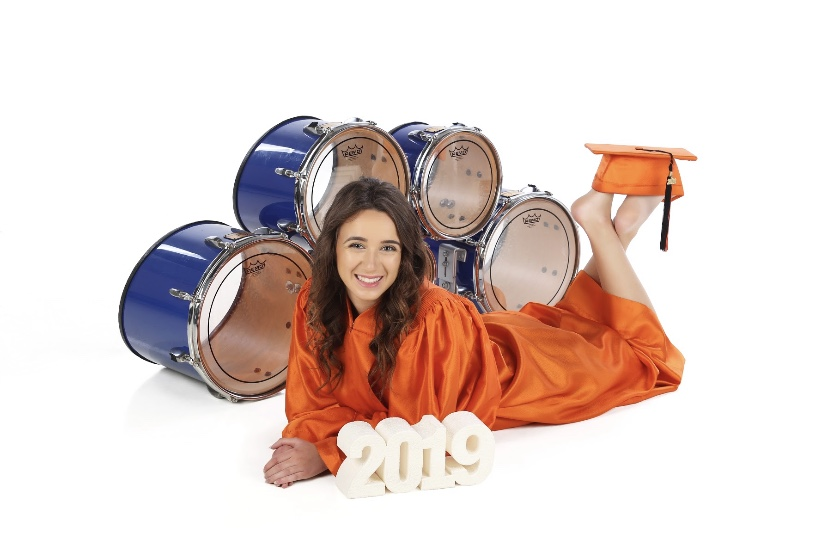

I was born near the end of 2000 in Fremont of the Bay Area near the Niles district. With an older brother and a twin sister, I grew up next to the hillside and enjoyed the outdoors. My father came from a Jewish background and taught me to appreciate art and technology. He was a drummer for a number of years and found his own niche in Silicon Valley. Kristie, my mom, grew up in the Midwest and taught me that gratitude is one of the most sustainable sources of happiness.
Jonathan, my older brother, grew up as a gamer and consequently, I did as well. From the age of 6 I played Super Smash Brothers Melee and Mario Kart Double Dash. From there on, I was always interested in computer programs and computer systems. I enjoyed their beautiful complexity as well as how they felt creative. With my father's encouragement, throughout elementary, middle, high school, and even my first two college years I was a percussionist in band. In high school, I participated in various female coding programs from Girls Who Code to Stanford's free Girls Teach Girls To Code camps. Between enjoying playing in band and programming, I began to see the tiniest realization how connected the two discplines are. At Washington High School, I founded and ran the Girls Who Code club, which sought to teach Python and HTML/CSS to the local community.
Besides band and computer science, I greatly appreciate the wilderness. With an intent to visit as many national parks as I can, I have completed the Mighty Five of Utah and have almost seen every California national park save for the Channel Islands. Prior to college, I had never gone camping or backpacking. My most recent trips include an overnight backpacking trip to Little Lakes Valley outside Mammoth (the home page image!) and visiting King's Canyon.
When I was a junior in high school, I interned at Amazon Lab126 in Sunnyvale through Girls Who Code. It was an introduction to computer science program, but I also had the amazing chance to develop with Amazon's Alexa. During the summer of my freshman year in college, I was supposed to intern with Nordstrom Engineering on the cloud solutions team, but the internship ended up being Covid canceled. I taught Python summer camps instead to disadvantaged and impoverished K-12 students through CS@SC. Around this time I joined the creative embedded systems club, Makers and began to do projects with them. The summer of my sophomore year, I interned at Wells Fargo on the automotive loan automation team where I wrote acceptance tests and assisted with developer testing. This summer of my junior year, I will be interning at Disney Media and Entertainment using Unreal for virtual production.
My two most direct interests are embedded systems and video game programming. Through both Makers and being a systems engineer on USC's Formula Electric raceteam I hope to explore these interests. I am the TA for the video game programming class and hope to learn more Unreal!